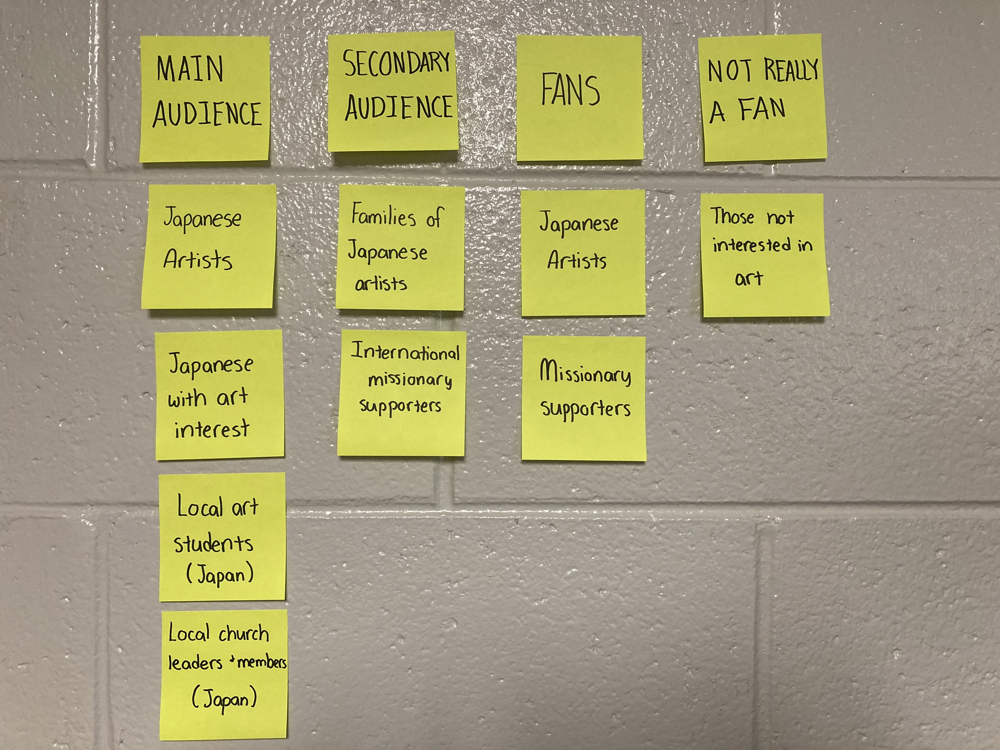
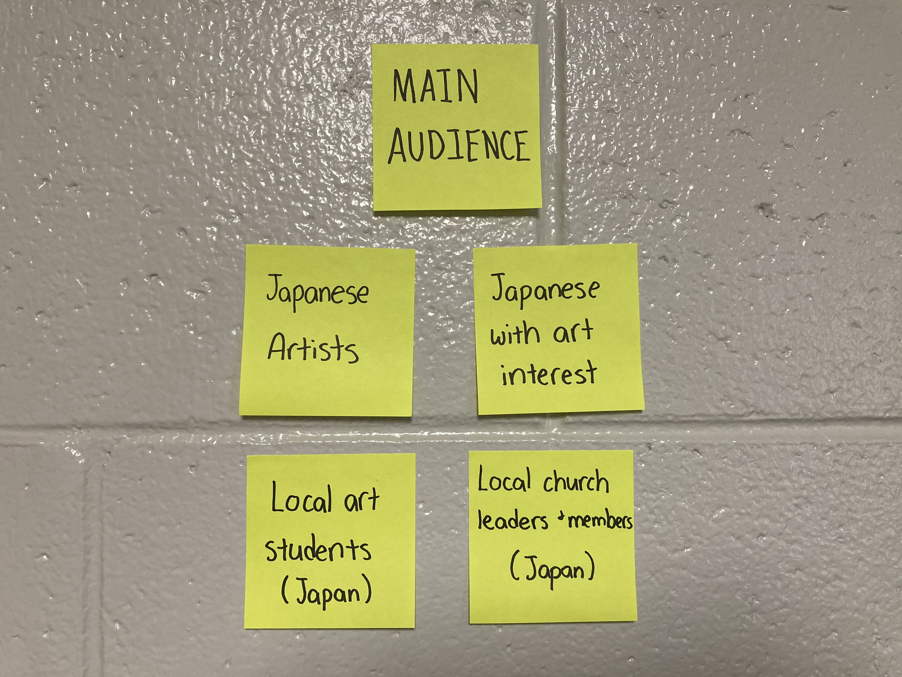
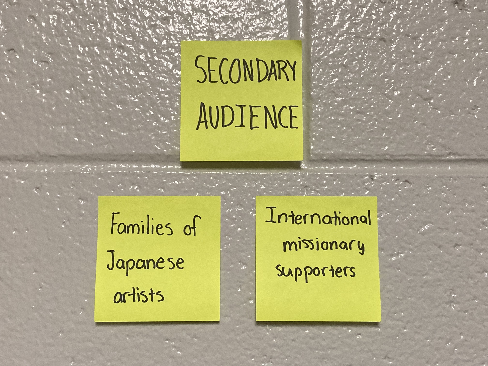
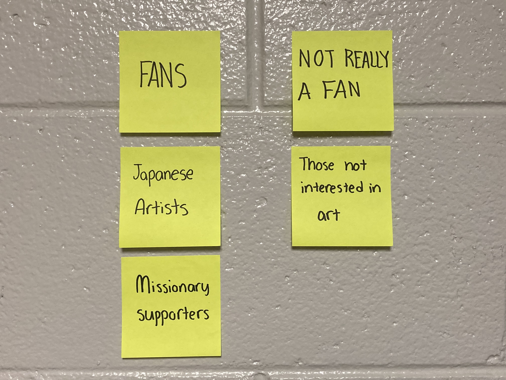

Audience and Goals
In this part of the process, the overall audience and goals were determined for the website.
Audience
Gaining a better concept of the audience is key to a successful solution.
To get a better image of what the website’s userbase would look like, I constructed a map of intended primary users, secondary users, fans, and skeptics.
The main audience was determined to be those typically expected to be using an art ministry’s website: artists, art students, those with an interest in art, and local church leaders/members. In the grand scheme of things, these people would be the ones using the website the most.
There is also a secondary audience. Naturally, the families of the artists (or art students) may look on the website to get a better feel for what their family member is interested in. International missionary supporters may also want to visit the site to check up on the missionaries’ ministry and to potentially donate to them. It is a ministry, after all.
Of course, there will be fans and not-so-much fans of the site. The primary fans would be the ones listed in the main and secondary audiences, mainly the artists (or art seekers) and missionary supporters. The not-so-much fans would be those who simply don’t have an interest in art.
Goals
Overarching Goals
Client
- Inform the local community about their ministry
- Provide relevant information about upcoming events and the ministry as a whole
- Form connections with people that will lead to sharing the Gospel
- Invite and encourage the art community to engage with the ministry
Audience
- Discover more information about the ministry
- Find details about upcoming events, such as exhibitions
- View artwork on the website
- Find contact information and locations
- Learn more about the artists on staff
- Donate to the ministry
Website
- Provide relevant information about upcoming events
- Inform the local community about the ministry
- Provide a way to RSVP for events
- Include relevant information (location, About Us, etc.)
- Have contact information for artists and members
- Display relevant imagery
- Provide a way to donate to the ministry
Specific Goals
| User | Goal | Content/Action |
|---|---|---|
| Local Artists | Gain information, RSVP for events, contact artist/ministry | Complete an RSVP form, click link to email address, navigate to relevant resources and information |
| Locals with an interest in art | Gain information, RSVP for events, contact artist/ministry | Gain information, RSVP for events, contact artist/ministry |
| Art College Students | Gain information, RSVP for events, contact artist/ministry | Complete an RSVP form, click link to email address, navigate to relevant resources and information |
| Missionary Supporters | Gain information, donate to the ministry, contact artist/ministy | Navigate to the desired pages on website, utilize the donate button/link, navigate site to relevant resources and information, click link to email address |
| Local Church Leaders and Members | Gain information, contact artist/ministry | click link to email address, navigate site to relevant resources and information |